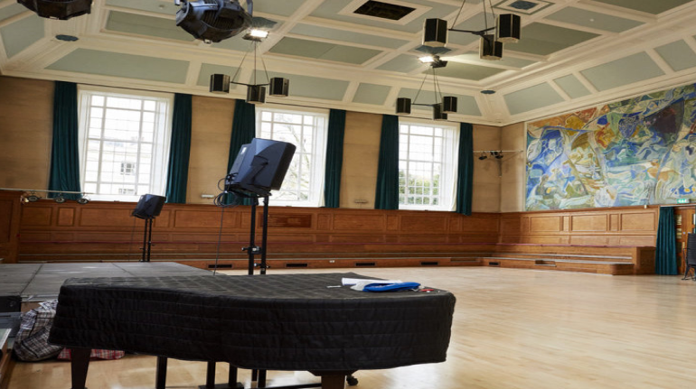

CMDN Venues
We started Camden Live to get more people into the incredible music scene here.
Check our listings of all the shows going on in Camden.
We also want to inspire you to freshen-up your playlist and listen to amazing new tracks! Plus, we run regular new music shows in some of the coolest small venues in Camden. Get your tickets to CMDN presents shows here.
Our shows are always cheap drinks, premium sounds and friendly crowds. If you can’t make a show – meet the upcoming artists on our live stream shows (search cmdnlive on YouTube and Facebook)
Join the action!-

Cecil Sharp House: Folk Is Not Dead
After two decades of interlinking friendship, L.S. Dunes saw five of emo and post-hardcore’s most respected figureheads finally get together. Rather than trading on old glories, however, debut LP Past Lives is about parrying their…
Read more -
Cecil Sharp House: Folk Is Not Dead
After two decades of interlinking friendship, L.S. Dunes saw five of emo and post-hardcore’s most respected figureheads finally get together. Rather than trading on old glories, however, debut LP Past Lives is about parrying their…
Read more -
Cecil Sharp House: Folk Is Not Dead
After two decades of interlinking friendship, L.S. Dunes saw five of emo and post-hardcore’s most respected figureheads finally get together. Rather than trading on old glories, however, debut LP Past Lives is about parrying their…
Read more -
Cecil Sharp House: Folk Is Not Dead
After two decades of interlinking friendship, L.S. Dunes saw five of emo and post-hardcore’s most respected figureheads finally get together. Rather than trading on old glories, however, debut LP Past Lives is about parrying their…
Read more

Enter Shikari:“There’s always some form of hope ready to be grasped, there’s always a possibility of something better”
Releasing their previous album into the void of the pandemic, Enter Shikari were lost at sea. But, after a lengthy period of “soul-searching” they have returned with their most uplifting album yet,
A Kiss For The Whole World, and a new vision for the future. On the eve of its release, Rou Reynolds reveals all…